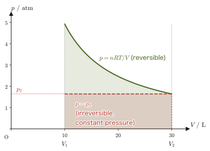
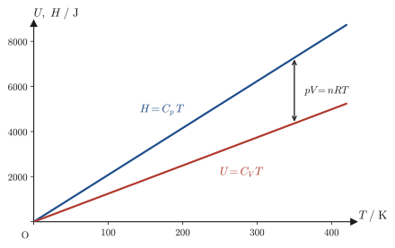
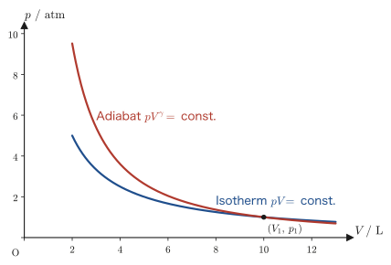
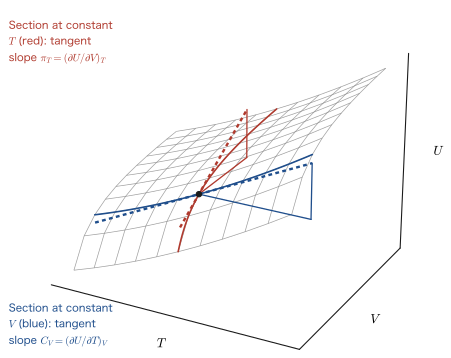
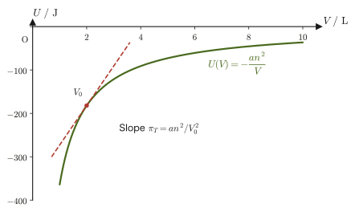
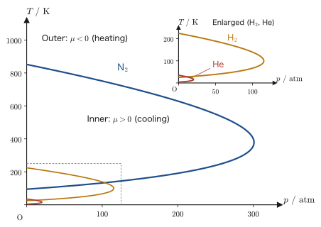

Chapter 27Heat Capacity, Enthalpy, and the Joule–Thomson Effect
If you open the valve of a carbon dioxide cylinder and let the high-pressure gas rush out, the area around the valve becomes cold—even though nothing is cooling it from outside. (A spray can becomes cold mainly because the liquid inside takes up heat as it evaporates, which is a different phenomenon.) This curious phenomenon is called the Joule–Thomson effect: when a high-pressure gas is forced through a narrow gap such as a “porous plug” or a thin valve and released to the low-pressure side, its temperature changes. In fact, the expansion valve (throttle) through which the refrigerant in the refrigerators and air conditioners around us passes is based on the idea of cooling by this throttling expansion, and even in the apparatus that makes liquid helium, the ultimate in low temperature, this effect is used in the final stage. In this chapter we derive, without skipping a single line, how this effect arises from the properties of a quantity called enthalpy.
The tool we need for this is the heat capacity. In high school physics you were taught that “the heat capacity $C$ is the quantity of heat required to raise the temperature of a body by $1\ \mathrm{K}$,” and you will have learned the relation $C=mc$ between it and the specific heat $c$. For a gas, however, the quantity of heat required changes with the condition under which the temperature is raised—whether the volume is held constant or the pressure is held constant. We therefore need to distinguish two heat capacities, the heat capacity at constant volume $C_V$ and the heat capacity at constant pressure $C_p$, and for this distinction we redefine two state quantities, the internal energy $U$ and the enthalpy $H=U+pV$, by means of partial derivatives. Moreover, Poisson's formula, which describes how a gas behaves when it is compressed or expanded without letting heat escape (adiabatically)—the reason a bicycle pump becomes hot when you push it hard—is derived from the same set of tools.
This chapter is also the first in which we begin to make full use of the notation that states explicitly “what is held constant in the partial differentiation,” as in $\left(\pdiff{U}{V}\right)_T$—a way of writing peculiar to thermodynamics. Think of it as practice in applying the idea of partial differentiation that you learned in University Mathematics, Section 6.2 to the thermodynamic situation in which “two of three or more variables are chosen as independent and the rest are treated as dependent variables.” If the notation for partial derivatives confuses you, you can always return to the basic idea of Section 6.2: “just fix one variable and differentiate with respect to the remaining one.”
- Calculate concretely the work $W=-\int p_{\mathrm{ex}}\,\dd V$ done on a gas by its surroundings in four typical cases: constant-pressure expansion, free expansion, reversible (quasi-static) expansion, and isothermal reversible expansion of an ideal gas
- Derive the heat capacity at constant volume $C_V=\left(\pdiff{U}{T}\right)_V$ from the heat capacity $C=\dd Q/\dd T$, then define the enthalpy $H=U+pV$ and derive the heat capacity at constant pressure $C_p=\left(\pdiff{H}{T}\right)_p$
- From the relation $C_V\,\dd T=-p\,\dd V$ for a reversible adiabatic process, derive Poisson's formulas for an ideal gas, $TV^{\gamma-1}=\text{constant}$ and $pV^{\gamma}=\text{constant}$ ($\gamma=C_p/C_V$)
- From the total differential of the internal energy, $\dd U=\pi_T\,\dd V+C_V\,\dd T$ ($\pi_T$: internal pressure), define the coefficient of thermal expansion $\alpha$ and the isothermal compressibility $\kappa_T$, and derive Mayer's relations $C_p-C_V=nR$ (ideal gas) and $C_p-C_V=\alpha^2TV/\kappa_T$ (general case)
- From the total differential of the enthalpy, $\dd H=-\mu C_p\,\dd p+C_p\,\dd T$, define the Joule–Thomson coefficient $\mu=\left(\pdiff{T}{p}\right)_H$ and the isothermal Joule–Thomson coefficient $\mu_T=\left(\pdiff{H}{p}\right)_T=-C_p\mu$, and connect them to the inversion temperature and the liquefaction of gases (how liquid helium is made starting from room temperature)
Source notes: Yasuhide Mochizuki, Physics Notes: Thermodynamics, pp. 32–39 (p. 40 is blank).
27.1 Work of Expansion — Constant-Pressure, Free, Reversible, and Isothermal Reversible Expansion
As we saw in Chapter 26, when a gas (the system) is expanded against an external pressure $p_{\mathrm{ex}}\ [\mathrm{Pa}]$ by a volume $\dd V\ [\mathrm{m^3}]$, the work $\dd'W$ done on the gas by its surroundings (for the symbol $\dd'$, which indicates an inexact differential, see Chapter 26) is given by
\begin{equation} \dd'W=-p_{\mathrm{ex}}\,\dd V \label{eq:27-work-diff} \end{equation}The total amount of work done on the gas when it changes from volume $V_1$ to $V_2$ is obtained by integrating Eq. \eqref{eq:27-work-diff}, which gives
\begin{equation} W=\int \dd'W=-\int_{V_1}^{V_2}p_{\mathrm{ex}}\,\dd V \label{eq:27-work-int} \end{equation}The work done by the gas on its surroundings is $W'=-W$ (this book's sign convention, Chapter 23, Conventions Used Throughout This Part). In what follows, we examine how Eq. \eqref{eq:27-work-int} becomes concrete depending on how the external pressure $p_{\mathrm{ex}}$ is applied, in four typical cases.
27.1.1 Constant-pressure expansion (the case in which $p_{\mathrm{ex}}$ is constant)
Consider the case in which the external pressure $p_{\mathrm{ex}}$ is kept constant throughout the change, as with a piston loaded with weights. Since $p_{\mathrm{ex}}$ is a constant that does not depend on the integration variable $V$, it can be taken outside the integral:
$$ W=-\int_{V_1}^{V_2}p_{\mathrm{ex}}\,\dd V=-p_{\mathrm{ex}}\int_{V_1}^{V_2}\dd V=-p_{\mathrm{ex}}\bigl[V\bigr]_{V_1}^{V_2}=-p_{\mathrm{ex}}(V_2-V_1) $$Hence we obtain
\begin{equation} W=-p_{\mathrm{ex}}\,\Delta V,\qquad \Delta V\equiv V_2-V_1 \label{eq:27-work-const-p} \end{equation}If the gas expands ($\Delta V\gt0$), then $W\lt0$ (negative work is done on the gas by its surroundings, that is, the gas does positive work on its surroundings); if it is compressed ($\Delta V\lt0$), then $W\gt0$.
27.1.2 Free expansion (the case $p_{\mathrm{ex}}=0$)
When a gas expands into a vacuum (free expansion), the external pressure is $p_{\mathrm{ex}}=0$ throughout. Substituting $p_{\mathrm{ex}}=0$ into Eq. \eqref{eq:27-work-int}, the integrand is $0$ for every $V$, so
\begin{equation} W=-\int_{V_1}^{V_2}0\cdot\dd V=0 \label{eq:27-work-free} \end{equation}There is nothing in a vacuum to push back, so the gas neither has work done on it nor does any work itself. Free expansion is an instantaneous event, like removing the partition of a container, and during the expansion the pressure and temperature of the gas are not uniformly defined—that is, it is a typical irreversible process (Chapter 26) that has no “path” that could be drawn on a $p\text{-}V$ diagram.
27.1.3 Reversible expansion (quasi-static process)
Consider expanding the gas slowly while keeping the external pressure $p_{\mathrm{ex}}$ smaller than the pressure $p$ of the gas itself by only an infinitesimal amount. Since the forces can be regarded as being almost always in balance, we may set
\begin{equation} p_{\mathrm{ex}}=p \label{eq:27-work-reversible-cond} \end{equation}Such an expansion is called a reversible expansion, or a quasi-static process (these are terms introduced in Chapter 26). In this case Eq. \eqref{eq:27-work-int} can be rewritten, using the pressure $p$ of the gas itself in the container (a quantity determined by the equation of state of the gas), as
\begin{equation} W=-\int_{V_1}^{V_2}p\,\dd V \label{eq:27-work-reversible} \end{equation}The decisive difference from Sections 27.1.1 and 27.1.2 is that, instead of the “external setting” of the external pressure, we can now bring the equation of state of the gas itself, $p=p(V,T)$, into the integral. In Section 27.1.4 below, we calculate this explicitly for an ideal gas.
27.1.4 Isothermal reversible expansion of an ideal gas
Derivation: Work in the isothermal reversible expansion of an ideal gas
Consider the case in which the gas is an ideal gas and is expanded reversibly while its temperature $T$ is kept constant. We use the equation of state of an ideal gas (Chapter 23):
$$ pV=nRT \qquad\therefore\ p=\frac{nRT}{V} $$Substituting this into Eq. \eqref{eq:27-work-reversible}, and noting that $T$ is constant, we can take $nRT$ together outside the integral:
$$ W=-\int_{V_1}^{V_2}p\,\dd V=-\int_{V_1}^{V_2}\frac{nRT}{V}\,\dd V=-nRT\int_{V_1}^{V_2}\frac{1}{V}\,\dd V $$Here, using $\displaystyle\int\frac{1}{V}\,\dd V=\ln V+\text{constant}$ (the basic formula in University Mathematics, Section 5.1), we obtain
$$ W=-nRT\bigl[\ln V\bigr]_{V_1}^{V_2}=-nRT(\ln V_2-\ln V_1) $$Rearranging with the property of logarithms $\ln V_2-\ln V_1=\ln(V_2/V_1)=-\ln(V_1/V_2)$, we get
\begin{equation} W=nRT\ln\frac{V_1}{V_2} \label{eq:27-work-isothermal} \end{equation}This is the work done on the gas. Since the work done by the gas on its surroundings is $W'=-W$, we have
\begin{equation} W'=nRT\ln\frac{V_2}{V_1} \label{eq:27-work-isothermal-prime} \end{equation}For an expansion, $V_2\gt V_1$, so $\ln(V_2/V_1)\gt0$, that is, $W'\gt0$ (the gas does positive work on its surroundings); this is consistent in sign with $W=-W'\lt0$ (negative work is done on the gas by its surroundings).
∎
Caution: Beware of mixing up the work done by the gas and the work done on the gas
$W=nRT\ln(V_1/V_2)$ in Eq. \eqref{eq:27-work-isothermal} is the work done on the gas by its surroundings (negative for an expansion). The work done by the gas on its surroundings is the one with the sign reversed, $W'=-W=nRT\ln(V_2/V_1)$ (Eq. \eqref{eq:27-work-isothermal-prime}; positive for an expansion). How to use $W$ and $W'$ follows Chapter 23, Conventions Used Throughout This Part. Let us get into the habit of checking who is doing the work on whom before interpreting the sign of the work.

Example 27.1: Work in the isothermal reversible expansion of an ideal gas
An ideal gas ($n=2.0\ \mathrm{mol}$) is expanded reversibly and isothermally from a volume $V_1=10\ \mathrm{L}$ to $V_2=30\ \mathrm{L}$ while its temperature is kept at $T=300\ \mathrm{K}$. Find the work $W$ done on the gas and the work $W'$ done by the gas on its surroundings.
Solution. Substitute $n=2.0\ \mathrm{mol}$, $R=8.314\ \mathrm{J/(mol\,K)}$, $T=300\ \mathrm{K}$, and $V_1/V_2=10/30=1/3$ into Eq. \eqref{eq:27-work-isothermal}.
$$ W=nRT\ln\frac{V_1}{V_2}=2.0\times8.314\times300\times\ln\frac{1}{3}\ \mathrm{J} $$Using $nRT=2.0\times8.314\times300=4988.4\ \mathrm{J}$ and $\ln(1/3)=-\ln3\approx-1.0986$, we get
$$ W\approx4988.4\times(-1.0986)\ \mathrm{J}\approx-5480\ \mathrm{J}\approx-5.5\ \mathrm{kJ} $$The gas expands and is the side doing work on its surroundings, so the work done on it is negative. The work the gas does on its surroundings is obtained by reversing the sign:
$$ W'=-W\approx5.5\times10^{3}\ \mathrm{J}=5.5\ \mathrm{kJ} $$(unit check: $[nRT]=\mathrm{mol}\times\mathrm{J/(mol\,K)}\times\mathrm{K}=\mathrm{J}$, and since $\ln(V_1/V_2)$ is dimensionless, the unit of $W$ is $\mathrm{J}$, which is correct.)
27.2 Heat Capacity and Heat Capacity at Constant Volume, Enthalpy and Heat Capacity at Constant Pressure
In Section 27.1 we saw that the work $W$ done on a gas by its surroundings is a quantity whose value depends on how the volume is made to change (at constant pressure, by free expansion, or reversibly). Next we want to consider the quantity of heat required to “heat” a gas. In high school physics, we learned that the quantity of heat needed to raise the temperature of an object by $1\ \mathrm{K}$ is called the heat capacity $C$, and that it is related to the specific heat $c$ by $C=mc$. For a gas the situation is a little more complicated. This is because the quantity of heat needed to raise the temperature by the same amount differs depending on whether we keep the volume constant (isochoric) or the pressure constant (isobaric) while heating the gas—in the isobaric case, the gas expands as it warms and thereby also does work on its surroundings, so it must absorb correspondingly more heat. In this section we first redefine the heat capacity using partial derivatives and derive the heat capacity at constant volume $C_V$ for the isochoric case. We then introduce a new state quantity, the enthalpy $H$, to make the isobaric case easier to handle, and define the heat capacity at constant pressure $C_p$.
Definition 27.1: Heat capacity
Let $\dd'Q$ (an inexact differential, Chapter 26) be the quantity of heat required to raise the temperature of a system by $\dd T$. Then the quantity
\begin{equation} C\equiv\frac{\dd'Q}{\dd T} \label{eq:27-heat-capacity-def} \end{equation}is called the heat capacity (unit $\mathrm{J/K}$). More precisely, for a finite temperature rise $\Delta T$ we let $\Delta Q$ be the quantity of heat absorbed and consider the average heat capacity $\Delta Q/\Delta T$; Eq. \eqref{eq:27-heat-capacity-def} is what we obtain by taking the limit $\Delta T\to0$.
The heat capacity is a quantity for the object as a whole, so it is larger for a larger object. To compare the properties of different substances, we use the molar heat capacity $C_{\mathrm m}$ per amount of substance $n$ (unit $\mathrm{J/(mol\,K)}$; at constant volume and at constant pressure it is written $C_{V,\mathrm m}$ and $C_{p,\mathrm m}$, respectively; these are the same quantities that we called the molar heat capacity at constant volume and the molar heat capacity at constant pressure in Section 23.7, and they are also called the constant-volume molar heat capacity and the constant-pressure molar heat capacity), and the specific heat $c$ per mass $m$ (unit $\mathrm{J/(kg\,K)}$). The relation $C=mc$ that we learned in high school is part of the relation $C=nC_{\mathrm m}=mc$.
Since $Q$ is not a state quantity but a quantity whose value depends on the path (Chapter 26), the heat capacity $C$ of Eq. \eqref{eq:27-heat-capacity-def} also depends, in general, on “the path along which the temperature was raised.” The heat capacity, too, is determined only once we specify “what is held constant while heating.” In what follows, therefore, we define two heat capacities for which the path is specified concretely, indicating the quantity held constant by the subscript of the partial derivative ($(\ \ )_V$, $(\ \ )_p$). First, consider raising the temperature while keeping the volume constant. The sign convention for the first law in this book (Chapter 23, Conventions Used Throughout This Part) is
$$ \dd U=\dd'Q+\dd'W,\qquad \dd'W=-p_{\mathrm{ex}}\,\dd V $$For a quasi-static change at constant volume ($\dd V=0$), we have $\dd'W=-p_{\mathrm{ex}}\,\dd V=0$, so $\dd U=\dd'Q$; that is, the quantity of heat absorbed in an isochoric process is equal, as it stands, to the increase in the internal energy. Therefore the heat capacity at constant volume can be written as
$$ C_V=\left(\frac{\dd'Q}{\dd T}\right)_V=\left(\pdiff{U}{T}\right)_V $$The right-hand side is written with a partial derivative because $U$ is in general a function of two variables, $U=U(T,V)$, depending on both the temperature $T$ and the volume $V$ (University Mathematics, Section 6.2). The operation “differentiate with respect to $T$ while keeping the volume constant” is made explicit by attaching the subscript $V$.
Definition 27.2: Heat capacity at constant volume
\begin{equation} C_V\equiv\left(\pdiff{U}{T}\right)_V \label{eq:27-Cv-def} \end{equation}Next, consider raising the temperature while keeping the pressure constant. In this case $\dd'W=-p\,\dd V\neq0$, so to extract just $\dd'Q$ from the right-hand side of $\dd U=\dd'Q+\dd'W$ we would have to treat $\dd U$ and $\dd'W$ separately, and the simple relation available for $C_V$—that “$\dd'Q$ is equal, as it stands, to the change of a state quantity”—cannot be used. We therefore introduce a new state quantity that combines $U$ with the product $pV$ of the pressure and the volume.
Definition 27.3: Enthalpy
Using the internal energy $U$, the pressure $p$, and the volume $V$, the state quantity $H$ defined by
\begin{equation} H\equiv U+pV \label{eq:27-enthalpy-def} \end{equation}is called the enthalpy. Since $U,p,V$ are all state quantities, $H$ is also a state quantity. Its unit is the joule $\mathrm{J}$, the same as the units of $U,pV$ (this can be confirmed from $[pV]=\mathrm{Pa}\cdot\mathrm{m^3}=\mathrm{N/m^2}\cdot\mathrm{m^3}=\mathrm{N\cdot m}=\mathrm{J}$).
Intuition: What is enthalpy for?
The physical quantity called enthalpy does not have a name that gives a direct, intuitive sense that “this is some kind of energy.” It is a quantity deliberately constructed to make isobaric processes easier to handle—indeed, as we will verify shortly, in an isobaric process the simple relation $\dd H=\dd'Q$ holds, and an argument of exactly the same form as for $C_V$ can be used as it is. In a sense, $H$ is the state quantity prepared to “take over, for constant pressure, the role that $U$ plays for constant volume.”
Caution: In an isochoric process, $\dd H$ does not equal the quantity of heat
Taking the total differential of Eq. \eqref{eq:27-enthalpy-def} and using the product rule ($\dd(pV)=p\,\dd V+V\,\dd p$), we obtain
$$ \dd H=\dd U+\dd(pV)=\dd U+p\,\dd V+V\,\dd p $$For an isochoric process ($\dd V=0$) this gives
$$ \dd H=\dd U+V\,\dd p $$which, however, does not in general coincide with the quantity of heat $\dd'Q=\dd U$ absorbed in an isochoric process (as seen above); the two differ by the amount $V\,\dd p\neq0$. That is, the relation $\dd H=\dd'Q$ does not hold in an isochoric process. As we see next, it holds only for an isobaric process.
Now consider an isobaric process ($\dd p=0$). This time the total differential of Eq. \eqref{eq:27-enthalpy-def} becomes
$$ \dd H=\dd U+p\,\dd V+V\,\dd p=\dd U+p\,\dd V\qquad(\because\ \dd p=0) $$On the other hand, the quantity of heat absorbed in this change is, from the first law $\dd U=\dd'Q+\dd'W=\dd'Q-p\,\dd V$ (for a reversible change we may set $p_{\mathrm{ex}}=p$), $\dd'Q=\dd U+p\,\dd V$. This has exactly the same form as the right-hand side of the expression for $\dd H$ found above. Therefore,
\begin{equation} \dd H=\dd'Q\qquad(\text{isobaric processes only}) \label{eq:27-dH-dQ-const-p} \end{equation}is obtained—a relation that forms an exact pair with $\dd U=\dd'Q$, which held for the isochoric process. Using Eq. \eqref{eq:27-dH-dQ-const-p}, we can define the heat capacity at constant pressure by exactly the same argument as for the heat capacity at constant volume.
Definition 27.4: Heat capacity at constant pressure
\begin{equation} C_p\equiv\left(\pdiff{H}{T}\right)_p\overset{\text{Eq. }\eqref{eq:27-dH-dQ-const-p}}{=}\left(\frac{\dd'Q}{\dd T}\right)_p \label{eq:27-Cp-def} \end{equation}Corresponding to the fact that $H$ is in general a function $H=H(T,p)$ (a function of the two variables $T,p$), the right-hand side is the partial derivative “differentiate with respect to $T$ while keeping the pressure constant.” Note that the rightmost equality of Eq. \eqref{eq:27-Cp-def} holds only for an isobaric process, by Eq. \eqref{eq:27-dH-dQ-const-p}. When $C_p$ can be regarded as constant (approximately, over some temperature range), the quantity of heat absorbed for a temperature change $\Delta T$ within that range can be computed by the simple formula $\Delta Q=C_p\,\Delta T$.

Example 27.2: Difference in the heat required at constant volume and at constant pressure
The temperature of $n=1.0\ \mathrm{mol}$ of a monatomic ideal gas ($C_V=\tfrac32 nR$) is raised by $\Delta T=50\ \mathrm{K}$ from its initial state. (1) Find the quantity of heat $\Delta Q_V$ absorbed when the gas is heated at constant volume. (2) Find the quantity of heat $\Delta Q_p$ absorbed when the gas is heated at constant pressure (that $C_p=\tfrac52 nR$ for a monatomic ideal gas will be shown in Section 27.5). (3) What physical meaning does the difference between (1) and (2) have?
Solution. (1) By Definition 27.2, $\Delta Q_V=C_V\Delta T$. Since $C_V=\tfrac32 nR=\tfrac32\times1.0\times8.314=12.47\ \mathrm{J/K}$,
$$ \Delta Q_V=12.47\times50=623.6\ \mathrm{J} $$(2) By Definition 27.4, $\Delta Q_p=C_p\Delta T$. Since $C_p=\tfrac52 nR=\tfrac52\times1.0\times8.314=20.79\ \mathrm{J/K}$,
$$ \Delta Q_p=20.79\times50=1039\ \mathrm{J} $$(3) Taking the difference, we have
$$ \Delta Q_p-\Delta Q_V=(C_p-C_V)\Delta T=1039-623.6=416\ \mathrm{J} $$This is exactly equal to $nR\Delta T=1.0\times8.314\times50=415.7\ \mathrm{J}$ (the two agree within the rounding of the significant figures). As seen in Figure 27.2, when the gas is heated at constant pressure it also expands at the same time, and the work $W'=p\Delta V=nR\Delta T$ is done by the gas on its surroundings (for an isobaric process of an ideal gas, $p\Delta V=nR\Delta T$ follows from $pV=nRT$), so the gas must absorb that much extra heat—this relation is, in fact, precisely Mayer's relation $C_p-C_V=nR$, which will be rigorously proved in Section 27.5.
27.3 Relations for Adiabatic Processes and Poisson's Formula
In Section 27.2, we considered processes in which a gas is heated while heat is let in and out. Here, conversely, we consider an adiabatic process ($\dd'Q=0$), in which no heat at all is allowed to flow in or out—for example, the phenomenon that a bicycle pump becomes hot when it is pushed quickly, or the compressions and expansions of air as a sound wave travels through it. The relation that tells how pressure, volume, and temperature are connected when a gas is compressed or expanded reversibly (quasi-statically) in an adiabatic process is Poisson's formula, which we derive in this section.
Derivation: The relation $C_V\,\dd T=-p\,\dd V$ for a reversible adiabatic process
With this book's sign convention for the first law (Section 23.4), $\dd U=\dd'Q+\dd'W$, we have $\dd'Q=0$ because the process is adiabatic, and therefore
$$ \dd U=\dd'W $$holds. If, furthermore, the change is reversible (quasi-static), then, writing $p$ for the pressure of the gas itself, we can use $\dd'W=-p\,\dd V$ (Section 27.1), which gives
\begin{equation} \dd U=-p\,\dd V \label{eq:27-adiabatic-dU} \end{equation}On the other hand, if the gas is an ideal gas, then, as shown in Section 27.4, the internal energy of an ideal gas is a function of temperature alone ($U=U(T)$), so for any process
\begin{equation} \dd U=C_V\,\dd T \label{eq:27-adiabatic-dU-ideal} \end{equation}holds (we prove this fact rigorously in Section 27.4 as the vanishing of the internal pressure, $\pi_T=(\partial U/\partial V)_T=0$; we note here that we are using it in advance). Comparing Eq. \eqref{eq:27-adiabatic-dU} with Eq. \eqref{eq:27-adiabatic-dU-ideal}, we obtain the relation
\begin{equation} C_V\,\dd T=-p\,\dd V \label{eq:27-adiabatic-relation} \end{equation}This is the basic relation satisfied by a reversible adiabatic process of an ideal gas.
∎
Caution: “Adiabatic” does not mean “constant volume”
Looking at $\dd U=C_V\,\dd T$ in Eq. \eqref{eq:27-adiabatic-dU-ideal}, you may recall that the definition of $C_V$ (Definition 27.2) was a partial derivative taken “at constant volume,” and you may mistakenly wonder, “Does the volume somewhere stay constant in an adiabatic process?” That is not so—in an adiabatic process, as Eq. \eqref{eq:27-adiabatic-relation} shows, the volume $V$ in general changes greatly. The real reason that $\dd U=C_V\,\dd T$ holds even in an adiabatic process is not “because the volume is constant,” but the fact, specific to ideal gases, that “in an ideal gas the internal energy $U$ is determined by the temperature alone, independently of the volume, to begin with (Section 27.4).” As long as this fact holds, $\dd U=C_V\,\dd T$ can be used in any process (adiabatic, isothermal, or isobaric).
Substituting the equation of state of an ideal gas, $p=nRT/V$ (Chapter 23), into Eq. \eqref{eq:27-adiabatic-relation}, we obtain
$$ C_V\,\dd T=-\frac{nRT}{V}\,\dd V $$Here we regard $C_V$ as independent of temperature (a good approximation for monatomic and diatomic ideal gases near room temperature). Dividing both sides by $T$ gives $C_V\dfrac{\dd T}{T}=-nR\dfrac{\dd V}{V}$. The left side is now an expression in $T$ alone, and the right side is an expression in $V$ alone (separating the variables to the two sides in this way is called separation of variables). We integrate this from state 1 ($T_1,V_1$) to state 2 ($T_2,V_2$):
$$ C_V\int_{T_1}^{T_2}\frac{\dd T}{T}=-nR\int_{V_1}^{V_2}\frac{\dd V}{V} $$Taking $C_V$ (which we set constant above) out of the integral and using $\displaystyle\int\frac{\dd x}{x}=\ln x+\text{constant}$ (University Mathematics, Section 5.1), we obtain
$$ C_V\ln\frac{T_2}{T_1}=-nR\ln\frac{V_2}{V_1}=nR\ln\frac{V_1}{V_2} $$Using the property of logarithms $a\ln x=\ln x^a$ to rearrange both sides, we obtain
$$ \ln\left(\frac{T_2}{T_1}\right)^{C_V}=\ln\left(\frac{V_1}{V_2}\right)^{nR} \qquad\Longrightarrow\qquad \left(\frac{T_2}{T_1}\right)^{C_V}=\left(\frac{V_1}{V_2}\right)^{nR} $$Raising both sides to the power $1/(nR)$ gives $\left(\dfrac{T_2}{T_1}\right)^{C_V/(nR)}=\dfrac{V_1}{V_2}$, which we rearrange to obtain
\begin{equation} V_1T_1^{\,C_V/(nR)}=V_2T_2^{\,C_V/(nR)} \label{eq:27-poisson-form1} \end{equation}That is, the quantity $VT^{C_V/(nR)}$ is kept constant throughout a reversible adiabatic process.
Preview: Mayer's relation $C_p-C_V=nR$ (to be proved in Section 27.5)
We want to rewrite the exponent $C_V/(nR)$ in Eq. \eqref{eq:27-poisson-form1} in a form that uses the more commonly used heat capacity ratio $\gamma\equiv C_p/C_V$. For this purpose, we use, ahead of its proof and only for its result, Mayer's relation for an ideal gas, which we prove in Section 27.5:
$$ C_p-C_V=nR $$Using this, we obtain
$$ \frac{C_V}{nR}=\frac{C_V}{C_p-C_V}=\frac{1}{\dfrac{C_p}{C_V}-1}=\frac{1}{\gamma-1} $$(here we divided the numerator and denominator by $C_V$).
There is also another route. Substituting $nR=C_p-C_V$ in advance into the first equation with the variables separated, $C_V\,\dd T/T=-nR\,\dd V/V$, and dividing by $C_V$, we get $\dfrac{\dd T}{T}=-(\gamma-1)\dfrac{\dd V}{V}$. Integrating, we obtain directly $\ln\dfrac{T_2}{T_1}=-(\gamma-1)\ln\dfrac{V_2}{V_1}$, that is, $T_1V_1^{\gamma-1}=T_2V_2^{\gamma-1}$ (Eq. \eqref{eq:27-poisson-TV}).
Substituting this result into Eq. \eqref{eq:27-poisson-form1} gives $V_1T_1^{1/(\gamma-1)}=V_2T_2^{1/(\gamma-1)}$. Raising both sides to the power $\gamma-1$, we obtain the more familiar form
\begin{equation} T_1V_1^{\,\gamma-1}=T_2V_2^{\,\gamma-1} \label{eq:27-poisson-TV} \end{equation}Furthermore, substituting $T=pV/(nR)$ from the equation of state of an ideal gas into Eq. \eqref{eq:27-poisson-TV}, we obtain
$$ \frac{p_1V_1}{nR}V_1^{\,\gamma-1}=\frac{p_2V_2}{nR}V_2^{\,\gamma-1} $$Canceling the constant $nR$ on both sides and combining the powers of the volume using $V^1\cdot V^{\gamma-1}=V^{\gamma}$ (the law of exponents), we obtain
\begin{equation} p_1V_1^{\,\gamma}=p_2V_2^{\,\gamma} \label{eq:27-poisson-pV} \end{equation}Equations \eqref{eq:27-poisson-form1}, \eqref{eq:27-poisson-TV}, and \eqref{eq:27-poisson-pV} are all equivalent relations, each merely expressing the same reversible adiabatic process in terms of a different set of variables.
Formula 27.1: Poisson's formula (reversible adiabatic process of an ideal gas)
When an ideal gas is changed adiabatically and reversibly (quasi-statically), each of the following quantities, expressed with the heat capacity ratio $\gamma=C_p/C_V$, stays constant throughout the change:
\begin{equation} TV^{\gamma-1}=\text{constant},\qquad pV^{\gamma}=\text{constant},\qquad V T^{1/(\gamma-1)}=\text{constant} \label{eq:27-poisson-summary} \end{equation}(The three equations are equivalent to one another.) This is called Poisson's formula. The relation “$pV^\gamma=\text{constant}$ in an adiabatic process,” which you learned as a formula in high school physics, has thus been derived from the first law and the equation of state of an ideal gas.

Example 27.3: Pressure and temperature after adiabatic compression
A diatomic ideal gas ($\gamma=C_p/C_V=7/5=1.4$), initially in the state $p_1=1.0\ \mathrm{atm}$, $V_1=10\ \mathrm{L}$, $T_1=300\ \mathrm{K}$, is compressed reversibly and adiabatically until its volume becomes $V_2=2.0\ \mathrm{L}$. Find the pressure $p_2$ and the temperature $T_2$ after the compression.
Solution. From $p_1V_1^\gamma=p_2V_2^\gamma$ in Formula 27.1,
$$ p_2=p_1\left(\frac{V_1}{V_2}\right)^{\gamma}=1.0\times\left(\frac{10}{2.0}\right)^{1.4}=1.0\times5^{1.4} $$Since $5^{1.4}=e^{1.4\ln5}=e^{1.4\times1.6094}=e^{2.2532}\approx9.52$,
$$ p_2\approx9.5\ \mathrm{atm} $$We find the temperature using the equation of state of an ideal gas, $p_1V_1/T_1=p_2V_2/T_2$ (the Boyle–Charles law):
$$ T_2=T_1\times\frac{p_2V_2}{p_1V_1}=300\times\frac{9.52\times2.0}{1.0\times10}=300\times1.904\approx571\ \mathrm{K} $$(As a check, substituting directly into $T_1V_1^{\gamma-1}=T_2V_2^{\gamma-1}$ of Formula 27.1 gives the same $T_2\approx571\ \mathrm{K}$. We see that, with the relatively large compression ratio $V_1/V_2=5$, the temperature rises sharply from $300\ \mathrm{K}$ to about $571\ \mathrm{K}$ (about $298\,{}^\circ\mathrm{C}$). A diesel engine can ignite diesel fuel without a spark plug because it makes use of this temperature rise due to adiabatic compression. The compression ratio of an actual diesel engine is several times that of this example (5), roughly 15–20, and the air becomes hot enough to exceed the ignition temperature of the diesel fuel.)
27.4 The Total Differential of the Internal Energy, Internal Pressure, Expansion Coefficient, and Isothermal Compressibility
In the previous section we used in advance the fact that “for an ideal gas, $\dd U=C_V\,\dd T$.” In this section we trace the reason for this back to the total differential of the internal energy $U$, and at the same time introduce two quantities that express how the volume of a gas (more generally, of a substance, including solids and liquids) changes with temperature and pressure: the coefficient of thermal expansion $\alpha$ and the isothermal compressibility $\kappa_T$.
The internal energy $U$ is, in general, a function of the two variables, temperature $T$ and volume $V$: $U=U(T,V)$ (the state of a gas is fixed by specifying two quantities, $T,V$ (or the equivalent pairs $p,V$ or $p,T$); see Chapter 23). Applying the formula for the total differential of a function of two variables (University Mathematics, Section 6.4) to $U(T,V)$ gives
\begin{equation} \dd U=\left(\pdiff{U}{V}\right)_T\dd V+\left(\pdiff{U}{T}\right)_V\dd T \label{eq:27-U-total-diff} \end{equation}The coefficient of the second term on the right-hand side is none other than the heat capacity at constant volume $C_V$ of Definition 27.2. The coefficient of the first term, $\left(\pdiff{U}{V}\right)_T$ (the rate of change of the internal energy when the volume is changed while the temperature is kept constant), has been given a special name and symbol.
Definition 27.5: Internal pressure
The following quantity is called the internal pressure and is written $\pi_T$:
\begin{equation} \pi_T\equiv\left(\pdiff{U}{V}\right)_T \label{eq:27-piT-def} \end{equation}It carries the name “pressure” because its dimension (unit) is actually the same as that of pressure, $\mathrm{J/m^3=Pa}$ (the dimension of energy divided by volume coincides with the dimension of pressure, $\mathrm{N/m^2=N\cdot m/m^3=J/m^3}$). Substituting Definitions 27.2 and 27.5 into Eq. \eqref{eq:27-U-total-diff}, we find that the total differential of the internal energy
\begin{equation} \dd U=\pi_T\,\dd V+C_V\,\dd T \label{eq:27-U-total-diff-piT} \end{equation}can be written in this form.

Intuition: What is the internal pressure?
The internal pressure $\pi_T$ is a quantity that expresses “how strongly the forces by which gas molecules attract or repel one another (intermolecular forces) show up in the volume dependence of the internal energy.” Picture people pressing against one another in a packed commuter train. The more crowded it gets (the smaller the volume becomes), the more the forces between people come into play. Gas molecules, too, are affected more by intermolecular forces the closer they come to one another, and their energy changes accordingly. This “rate of change, with respect to volume, of the energy due to intermolecular forces” is the internal pressure. In an ideal gas, whose molecules do not interact with one another at all, there is no energy due to intermolecular forces in the first place, even when the volume is changed (even when the average distance between molecules changes), so $U$ does not depend on the volume—we will verify this right away. On the other hand, in a real gas with attractive forces between molecules (for example, a van der Waals gas), increasing the volume and pulling the molecules apart requires giving energy against the attraction, so $U$ increases and $\pi_T\gt0$. Figure 27.5, which we look at next, depicts exactly this situation concretely with a model of a real gas.
That $U$ of an ideal gas does not depend on the volume is also supported by experiment. Joule found that even when a compressed gas is allowed to expand freely into an evacuated container, the temperature of the water in the water bath hardly changes (the gas receives neither heat nor work, so $\Delta U=0$; if the temperature does not change, then $U$ does not depend on the volume). For real gases, more precise experiments find a slight temperature change, which shows that $\pi_T\neq0$. In Section 27.5 we will derive the formula $\pi_T=T(\partial p/\partial T)_V-p$ for calculating $\pi_T$ from the equation of state, and verify that $\pi_T=0$ for an ideal gas.

Let us verify that the internal pressure indeed vanishes for an ideal gas. The equation of state of an ideal gas, $p=nRT/V$, determines the pressure from the temperature and volume alone and contains no term corresponding to intermolecular forces. The internal energy of an ideal gas likewise consists only of the total kinetic energy of the thermal motion of the molecules and has no potential energy due to intermolecular forces (the kinetic theory of gases and the equipartition theorem; Section 24.3). Therefore, for an ideal gas $U$ does not depend on the volume and is a function of the temperature alone, so
\begin{equation} \pi_T=\left(\pdiff{U}{V}\right)_T=0\qquad(\text{ideal gas}) \label{eq:27-piT-ideal-zero} \end{equation}Substituting this into Eq. \eqref{eq:27-U-total-diff-piT} gives
\begin{equation} \dd U=C_V\,\dd T\qquad(\text{ideal gas, valid for any process}) \label{eq:27-dU-ideal} \end{equation}This is the true nature of the relation that we used in advance for the adiabatic process in Section 27.3. Note that the condition “adiabatic” does not enter Eq. \eqref{eq:27-dU-ideal} at all. For an ideal gas, $\dd U=C_V\,\dd T$ always holds, whether the process is adiabatic, isothermal, or isobaric. This is a property of the special material model called the ideal gas, and it does not hold for general substances (real gases, liquids, and solids, whose internal pressure is not zero).
Next, we define two coefficients that express how the volume changes with temperature and pressure.
Definition 27.6: Coefficient of thermal expansion
The rate of change of volume per unit volume when the temperature is changed while the pressure is kept constant is called the (volumetric) coefficient of thermal expansion, and it is defined by
\begin{equation} \alpha\equiv\frac{1}{V}\left(\pdiff{V}{T}\right)_p \label{eq:27-alpha-def} \end{equation}Its unit is $\mathrm{K^{-1}}$. Dividing $\left(\pdiff{V}{T}\right)_p$ (the rate of change of the volume with respect to a change in temperature at constant pressure) by the original volume $V$, so as to express it as a rate of change “per $1\ \mathrm{m^3}$,” gives $\alpha$. Even for the same value of $\left(\pdiff{V}{T}\right)_p$, our impression of whether a substance “expands readily” should differ depending on whether the original volume is large or small, so normalizing by the volume makes it easier to compare as a quantity intrinsic to the substance.
Definition 27.7: Isothermal compressibility
The rate of change of volume per unit volume (with its sign reversed) when the pressure is changed while the temperature is kept constant is called the isothermal compressibility, and it is defined by
\begin{equation} \kappa_T\equiv-\frac{1}{V}\left(\pdiff{V}{p}\right)_T \label{eq:27-kappaT-def} \end{equation}Its unit is the reciprocal of pressure, $\mathrm{Pa^{-1}}$. Raising the pressure always decreases the volume ($\left(\pdiff{V}{p}\right)_T\lt0$), so a minus sign is placed in front to make $\kappa_T$ a positive quantity.
Caution: Relation to the bulk modulus $K$
The isothermal compressibility defined here is the flip side of the bulk modulus $K$ that we studied in Chapter 19 (Definition 19.3, $K=\sigma/\varepsilon_V$). To avoid confusion, this book writes this quantity as $\kappa_T$ (rather than $K_T$, as some textbooks do). Let us check the relation between the two. As we saw in the Caution in Chapter 19 (immediately after Definition 19.3), when the pressure $p$ (a positive quantity) is used, $K=-p/\varepsilon_V$ (with $\varepsilon_V=\Delta V/V$). Rewriting this in the language of derivatives gives $K=-V\left(\pdiff{p}{V}\right)_T$ (when we consider isothermal changes), which is precisely the reciprocal of Eq. \eqref{eq:27-kappaT-def}:
\begin{equation} K=\frac{1}{\kappa_T} \label{eq:27-K-kappaT-relation} \end{equation}The bulk modulus $K$ expresses “how hard it is to compress the substance when the pressure is raised” (stiffness), while the isothermal compressibility $\kappa_T$ expresses “how easily it is compressed” (softness); we may regard them as two ways of describing the same phenomenon that are related by a reciprocal. Traditionally, the convention of using $\kappa_T$ (the compressibility) has become established in the field of gases, whereas the convention of using $K$ (the elastic modulus) has become established in the field of mechanics of materials.
Let us compute $\alpha$ and $\kappa_T$ explicitly for an ideal gas. Solving the equation of state of an ideal gas, $pV=nRT$, for $V$ while keeping the pressure $p$ constant gives $V=nRT/p$. Taking the partial derivative of this with respect to $T$ gives
$$ \left(\pdiff{V}{T}\right)_p=\frac{nR}{p} $$(here $p$ is treated as a constant). Substituting this into Eq. \eqref{eq:27-alpha-def} and using $V=nRT/p$ (the same equation of state) once more, we obtain
$$ \alpha=\frac{1}{V}\cdot\frac{nR}{p}=\frac{1}{nRT/p}\cdot\frac{nR}{p}=\frac{1}{T} $$That is, for an ideal gas the coefficient of thermal expansion equals the reciprocal of the temperature: $\alpha=1/T$ (ideal gas). Next, we differentiate $V=nRT/p$ partially with respect to $p$, this time keeping the temperature $T$ constant. Since $V$ is proportional to $p$ raised to the power $-1$ ($V=nRT\cdot p^{-1}$), the differentiation formula for power functions gives
$$ \left(\pdiff{V}{p}\right)_T=nRT\times(-1)p^{-2}=-\frac{nRT}{p^2}=-\frac{V}{p} $$(in the last equality we again used $V=nRT/p$ to rewrite it as $nRT=pV$). Substituting into Eq. \eqref{eq:27-kappaT-def}, we obtain
\begin{equation} \kappa_T=-\frac{1}{V}\left(-\frac{V}{p}\right)=\frac{1}{p}\qquad(\text{ideal gas}) \label{eq:27-kappaT-ideal} \end{equation}The isothermal compressibility of an ideal gas equals the reciprocal of the pressure—a simple result peculiar to the ideal gas, namely that it does not depend at all on the kind of gas (the mass or size of its molecules) and is determined by the pressure alone.
Intuition: Why is the compressibility smaller at higher pressure?
Equation \eqref{eq:27-kappaT-ideal} says that “the higher the pressure, the smaller $\kappa_T$ (the ease of compression) becomes.” Note that $\kappa_T$ is defined not by the absolute volume change $\Delta V$ but by the fraction $\Delta V/V$ relative to the original volume. For an ideal gas at constant temperature, $pV=\text{constant}$. Taking the logarithm of both sides and differentiating gives $\dfrac{\dd p}{p}+\dfrac{\dd V}{V}=0$, that is, $\dfrac{\dd V}{V}=-\dfrac{\dd p}{p}$. The fractional decrease of the volume equals the fractional increase of the pressure. Even if the same pressure increment $\dd p$ is applied, the larger the original pressure $p$, the smaller the “fractional increase” $\dd p/p$ of the pressure, so the fractional decrease $\abs{\dd V/V}$ of the volume is also smaller. This is the meaning of $\kappa_T=-\dfrac1V\dfrac{\dd V}{\dd p}=\dfrac1p$.
Example 27.4: Coefficient of thermal expansion and isothermal compressibility of an ideal gas
For an ideal gas at room temperature $T=300\ \mathrm{K}$, (1) find the coefficient of thermal expansion $\alpha$. (2) Find the isothermal compressibility $\kappa_T$ at a pressure of $p=1.0\ \mathrm{atm}$ and at $p=10\ \mathrm{atm}$, and compare them.
Solution. (1) From $\alpha=1/T$,
$$ \alpha=\frac{1}{300\ \mathrm{K}}\approx3.33\times10^{-3}\ \mathrm{K^{-1}} $$(2) From $\kappa_T=1/p$, for $p=1.0\ \mathrm{atm}=1.013\times10^{5}\ \mathrm{Pa}$,
$$ \kappa_T=\frac{1}{1.013\times10^{5}\ \mathrm{Pa}}\approx9.87\times10^{-6}\ \mathrm{Pa^{-1}} $$For $p=10\ \mathrm{atm}=1.013\times10^{6}\ \mathrm{Pa}$,
$$ \kappa_T=\frac{1}{1.013\times10^{6}\ \mathrm{Pa}}\approx9.87\times10^{-7}\ \mathrm{Pa^{-1}} $$so raising the pressure by a factor of 10 reduces the isothermal compressibility to exactly $1/10$ (in accordance with the inverse proportionality of Eq. \eqref{eq:27-kappaT-ideal}). In terms of the bulk modulus, $K=1/\kappa_T$ becomes 10 times larger in proportion to the pressure—the numbers also confirm that the higher the pressure of a gas, the “stiffer” it becomes against the same pressure increment.
27.5 Mayer's Relation — The Ideal Gas and the General Case
In the sections so far, we have several times used “Mayer's relation $C_p-C_V=nR$” in advance, without proof. In this section we first derive this relation for an ideal gas, and then derive the form of Mayer's relation that holds for general substances, not only ideal gases.
Derivation: Mayer's relation (ideal gas)
Using Definitions 27.2 and 27.4, we can write $C_p-C_V$ as
$$ C_p-C_V=\left(\pdiff{H}{T}\right)_p-\left(\pdiff{U}{T}\right)_V $$Substituting $H=U+pV$ (Definition 27.3), we obtain
$$ C_p-C_V=\left(\pdiff{}{T}(U+pV)\right)_p-\left(\pdiff{U}{T}\right)_V =\left(\pdiff{U}{T}\right)_p+\left(\pdiff{}{T}(pV)\right)_p-\left(\pdiff{U}{T}\right)_V $$For an ideal gas, as we verified in Eq. \eqref{eq:27-piT-ideal-zero} (Section 27.4), $U$ is a function of the temperature only (it does not depend on the volume), so differentiating with respect to $T$ at constant pressure and differentiating with respect to $T$ at constant volume give the same value:
$$ \left(\pdiff{U}{T}\right)_p=\left(\pdiff{U}{T}\right)_V $$Therefore the first and third terms of the expression above cancel each other, and only
$$ C_p-C_V=\left(\pdiff{}{T}(pV)\right)_p $$remains. When $p$ is held constant, $p$ is a constant, so by the product rule it can be taken outside: $\left(\pdiff{}{T}(pV)\right)_p=p\left(\pdiff{V}{T}\right)_p$. From the equation of state of an ideal gas, $V=nRT/p$, so at constant $p$ we have $\left(\pdiff{V}{T}\right)_p=nR/p$, and therefore
$$ \left(\pdiff{}{T}(pV)\right)_p=p\left(\pdiff{V}{T}\right)_p=p\cdot\frac{nR}{p}=nR $$(Here the $p$ canceled; $n,R$ are constants, and the derivative of a linear function of $T$ is just its coefficient.) Hence
\begin{equation} C_p-C_V=nR\qquad(\text{ideal gas}) \label{eq:27-mayer-ideal} \end{equation}is obtained.
∎
Formula 27.2: Mayer's relation (ideal gas)
For an ideal gas, the difference between the heat capacity at constant pressure and the heat capacity at constant volume is equal to the product of the gas constant $R$ and the amount of substance $n$:
$$ C_p-C_V=nR $$This verifies that the relation we used in advance in Example 27.2 and in Section 27.3 is correct.
Example 27.5: Mayer's relation for monatomic and diatomic ideal gases
According to the kinetic theory of gases (Section 24.3), it is known that $C_V=\tfrac32 nR$ for a monatomic ideal gas, and $C_V=\tfrac52 nR$ for a diatomic ideal gas (a gas whose molecules have three translational and two rotational degrees of freedom, with molecular vibration not excited near room temperature). Find $C_p$ in each case, and verify that Formula 27.2 holds.
Solution. Monatomic molecules: by Formula 27.2, $C_p=C_V+nR=\tfrac32 nR+nR=\tfrac52 nR$. Computing the difference gives $C_p-C_V=\tfrac52 nR-\tfrac32 nR=nR$, which indeed agrees with Formula 27.2. Diatomic molecules: similarly, $C_p=C_V+nR=\tfrac52 nR+nR=\tfrac72 nR$, and the difference is $C_p-C_V=\tfrac72 nR-\tfrac52 nR=nR$, which agrees. Checking numerically as well, for $n=1.0\ \mathrm{mol}$ we have $nR=8.314\ \mathrm{J/K}$, and for both monatomic and diatomic molecules $C_p-C_V$ is exactly this value (the claim of Formula 27.2 is that, for an ideal gas, the difference is always the same, regardless of the kind of gas).
Formula 27.2 is a special relation that holds only for ideal gases. How, then, is $C_p-C_V$ expressed for real gases, in which intermolecular forces act, and for liquids and solids? To investigate this, we first need to prepare a mathematical tool that will be used along the way.
Math Tool: The cyclic relation (an identity involving partial derivatives of three variables)
When three variables $x,y,z$, such as pressure, volume, and temperature, are related to one another by an equation of state $F(x,y,z)=0$ (specifying any two of them determines the remaining one), the following identity holds:
\begin{equation} \left(\pdiff{x}{y}\right)_z\left(\pdiff{y}{z}\right)_x\left(\pdiff{z}{x}\right)_y=-1 \label{eq:27-cyclic-relation} \end{equation}This is called the cyclic relation (also known as the triple product rule). It is a somewhat surprising identity: if the three partial derivatives are multiplied together “cyclically” in this order, the product is $-1$ rather than $+1$. Let us derive it. Regarding $z=z(x,y)$ and taking the total differential, we have
$$ \dd z=\left(\pdiff{z}{x}\right)_y\dd x+\left(\pdiff{z}{y}\right)_x\dd y $$Now consider the case in which $x,y$ are varied while $z$ is held constant ($\dd z=0$). Then
$$ 0=\left(\pdiff{z}{x}\right)_y\dd x+\left(\pdiff{z}{y}\right)_x\dd y \qquad\Longrightarrow\qquad \left.\frac{\dd x}{\dd y}\right|_{z}=-\frac{\left(\pdiff{z}{y}\right)_x}{\left(\pdiff{z}{x}\right)_y} $$The left-hand side, “the rate of change of $x$ with respect to the change in $y$ when $z$ is held constant,” is by definition exactly $\left(\pdiff{x}{y}\right)_z$. Moreover, $\left(\pdiff{z}{y}\right)_x$ and $\left(\pdiff{z}{x}\right)_y$ on the right-hand side can be rewritten using the reciprocal relations $\left(\pdiff{z}{y}\right)_x=1\Big/\left(\pdiff{y}{z}\right)_x$ and $\left(\pdiff{z}{x}\right)_y=1\Big/\left(\pdiff{x}{z}\right)_y$, which correspond to the derivative formula for the inverse of a function of one variable (analogous to $\dfrac{\dd y}{\dd x}=1\Big/\dfrac{\dd x}{\dd y}$). (Once one variable is held fixed, the relation between the remaining two variables is just a relation between ordinary functions of one variable, so the usual inverse-function derivative formula can be used as it stands.) Substituting these gives
$$ \left(\pdiff{x}{y}\right)_z=-\frac{1\big/\left(\pdiff{y}{z}\right)_x}{1\big/\left(\pdiff{x}{z}\right)_y}=-\left(\pdiff{x}{z}\right)_y\Big/\left(\pdiff{y}{z}\right)_x $$Multiplying both sides by $\left(\pdiff{y}{z}\right)_x$ gives $\left(\pdiff{x}{y}\right)_z\left(\pdiff{y}{z}\right)_x=-\left(\pdiff{x}{z}\right)_y$. Multiplying both sides further by $\left(\pdiff{z}{x}\right)_y$ and using the reciprocal relation $\left(\pdiff{x}{z}\right)_y\left(\pdiff{z}{x}\right)_y=1$ on the right-hand side, we obtain
$$ \left(\pdiff{x}{y}\right)_z\left(\pdiff{y}{z}\right)_x\left(\pdiff{z}{x}\right)_y=-\left(\pdiff{x}{z}\right)_y\left(\pdiff{z}{x}\right)_y=-1 $$and Eq. \eqref{eq:27-cyclic-relation} is proved. We will use this relation repeatedly later, in the proof of the general form of Mayer's relation in this section and in the proofs for the Joule–Thomson coefficient in Section 27.6 and Section 27.7.
Derivation: Mayer's relation (general case)
For general substances, not only ideal gases, we start from the same starting point as before,
$$ C_p-C_V=\left(\pdiff{U}{T}\right)_p+\left(\pdiff{}{T}(pV)\right)_p-\left(\pdiff{U}{T}\right)_V $$but this time we cannot use $\left(\pdiff{U}{T}\right)_p=\left(\pdiff{U}{T}\right)_V$ (a relation that holds only for ideal gases). So, noting that $U=U(T,V)$ and that when the pressure $p$ is held constant, $V$ also changes together with $T$ ($V=V(T,p)$), we use the partial derivative of a composite function (University Mathematics, Section 6.4). Since $U$ depends on $T$ directly and also depends on $T$ through $V$, we obtain
$$ \left(\pdiff{U}{T}\right)_p=\left(\pdiff{U}{T}\right)_V+\left(\pdiff{U}{V}\right)_T\left(\pdiff{V}{T}\right)_p=C_V+\pi_T\left(\pdiff{V}{T}\right)_p $$(this is the same as the form obtained by dividing both sides of Eq. \eqref{eq:27-U-total-diff-piT} (Section 27.4) by $\dd T$ at constant pressure). Here, from the coefficient of thermal expansion $\alpha=\dfrac1V\left(\pdiff{V}{T}\right)_p$ of Definition 27.6, we have $\left(\pdiff{V}{T}\right)_p=\alpha V$, so
\begin{equation} \left(\pdiff{U}{T}\right)_p=C_V+\pi_T\alpha V \label{eq:27-dUdTp-general} \end{equation}Also, $\left(\pdiff{}{T}(pV)\right)_p=p\left(\pdiff{V}{T}\right)_p=p\alpha V$ (since $p$ is constant, it can be taken outside by the product rule). Substituting these into the expression for $C_p-C_V$, we obtain
$$ C_p-C_V=\underbrace{(C_V+\pi_T\alpha V)}_{(\partial U/\partial T)_p}+p\alpha V-C_V=\pi_T\alpha V+p\alpha V=(p+\pi_T)\alpha V $$(the two $C_V$ terms canceled each other). What remains is to rewrite $\pi_T=(\partial U/\partial V)_T$ in a form that can be expressed in terms of pressure, volume, and temperature alone. For this purpose, we use the following fundamental relation of thermodynamics:
$$ \dd U=T\,\dd S-p\,\dd V $$(Here $S$ is a state quantity called entropy, which we study in Chapter 29; here we use this relation in advance.) Holding the temperature $T$ constant and dividing this equation by $\dd V$ (precisely speaking, taking the partial derivative with respect to $V$), we obtain
$$ \left(\pdiff{U}{V}\right)_T=T\left(\pdiff{S}{V}\right)_T-p $$The $\left(\pdiff{S}{V}\right)_T$ on the right-hand side is a quantity that is hard to measure directly, but using the Maxwell relation $\left(\pdiff{S}{V}\right)_T=\left(\pdiff{p}{T}\right)_V$ (which we prove in Section 31.3), it can be rewritten as a quantity that can be computed from the equation of state alone:
\begin{equation} \pi_T=\left(\pdiff{U}{V}\right)_T=T\left(\pdiff{p}{T}\right)_V-p \label{eq:27-piT-maxwell} \end{equation}(This equation is called the thermodynamic equation of state. For details, see Section 31.6.) As a check, for an ideal gas, $p=nRT/V$ gives $T\left(\pdiff{p}{T}\right)_V-p=T\cdot\dfrac{nR}{V}-\dfrac{nRT}{V}=0$, that is, $\pi_T=0$. For a van der Waals gas (1 mol), $p=\dfrac{RT}{V-b}-\dfrac{a}{V^2}$ gives $T\left(\pdiff{p}{T}\right)_V-p=\dfrac{RT}{V-b}-\left(\dfrac{RT}{V-b}-\dfrac{a}{V^2}\right)=\dfrac{a}{V^2}$, that is, $\pi_T=a/V^2$ ($an^2/V^2$ for $n$ mol), which agrees with the slope of $U(V)=-an^2/V$ in Figure 27.5.
Substituting Eq. \eqref{eq:27-piT-maxwell}, we obtain
$$ (p+\pi_T)\alpha V=\left(p+T\left(\pdiff{p}{T}\right)_V-p\right)\alpha V=\alpha T V\left(\pdiff{p}{T}\right)_V $$(the two $p$ terms canceled each other once again). Finally, applying the cyclic relation \eqref{eq:27-cyclic-relation} with $x=p,\,y=T,\,z=V$, we obtain
$$ \left(\pdiff{p}{T}\right)_V\left(\pdiff{T}{V}\right)_p\left(\pdiff{V}{p}\right)_T=-1 \qquad\therefore\ \left(\pdiff{p}{T}\right)_V=-1\Big/\left[\left(\pdiff{T}{V}\right)_p\left(\pdiff{V}{p}\right)_T\right] $$Here, from Definitions 27.6 and 27.7, we use $\left(\pdiff{T}{V}\right)_p=1/(\alpha V)$ (the reciprocal relation of $\left(\pdiff{V}{T}\right)_p=\alpha V$) and $\left(\pdiff{V}{p}\right)_T=-\kappa_T V$ (merely a rewriting of Definition 27.7), which give
$$ \left(\pdiff{T}{V}\right)_p\left(\pdiff{V}{p}\right)_T=\frac{1}{\alpha V}\times(-\kappa_T V)=-\frac{\kappa_T}{\alpha} $$(the $V$ canceled). Therefore,
$$ \left(\pdiff{p}{T}\right)_V=-\frac{1}{-\kappa_T/\alpha}=\frac{\alpha}{\kappa_T} $$Substituting this gives
$$ \alpha TV\left(\pdiff{p}{T}\right)_V=\alpha TV\times\frac{\alpha}{\kappa_T}=\frac{\alpha^2TV}{\kappa_T} $$Therefore,
\begin{equation} C_p-C_V=\frac{\alpha^2TV}{\kappa_T} \label{eq:27-mayer-general} \end{equation}which is Mayer's relation that holds for general substances, not only ideal gases (another derivation is also given in Section 31.7).
∎
Formula 27.3: Mayer's relation (general)
\begin{equation} C_p-C_V=\frac{\alpha^2TV}{\kappa_T} \label{eq:27-mayer-general-boxed} \end{equation}$\alpha,\kappa_T$ are the coefficient of thermal expansion (Definition 27.6) and the isothermal compressibility (Definition 27.7), respectively. Since $\alpha^2\ge0$ and $T,V,\kappa_T\gt0$, the right-hand side is never negative, so $C_p\ge C_V$ always holds—we obtain the general conclusion that the heat capacity at constant pressure is never lower than the heat capacity at constant volume (equality holds only for a special substance or state with $\alpha=0$, that is, one whose volume does not change at all when the temperature is changed).
Example 27.6: The general form of Mayer's relation reduces to the ideal-gas case
Substitute $\alpha=1/T$ and $\kappa_T=1/p$ for an ideal gas (found in Section 27.4) into Formula 27.3, and verify that it reduces to $C_p-C_V=nR$ of Formula 27.2.
Solution. Substituting into the right-hand side of Formula 27.3, we obtain
$$ \frac{\alpha^2TV}{\kappa_T}=\frac{(1/T)^2\times T\times V}{1/p}=\frac{V/T}{1/p}=\frac{pV}{T} $$From the equation of state of an ideal gas, $pV=nRT$, we have $pV/T=nR$, so
$$ \frac{\alpha^2TV}{\kappa_T}=nR $$which indeed agrees with $C_p-C_V=nR$ of Formula 27.2. We have thus verified that Formula 27.3, which holds for general substances, simplifies to the simpler Formula 27.2 in the special case of an ideal gas.
Example 27.7: Why $C_p\approx C_V$ for liquid water
For liquid water at $20\,{}^\circ\mathrm{C}$ ($T=293\ \mathrm{K}$), the coefficient of thermal expansion is $\alpha\approx2.1\times10^{-4}\ \mathrm{K^{-1}}$, the isothermal compressibility is $\kappa_T\approx4.6\times10^{-10}\ \mathrm{Pa^{-1}}$, and the molar volume is $V_{\mathrm m}\approx1.8\times10^{-5}\ \mathrm{m^3/mol}$. Find $C_{p,\mathrm m}-C_{V,\mathrm m}$ from Formula 27.3, and compare it with the molar heat capacity at constant pressure, $C_{p,\mathrm m}\approx75\ \mathrm{J/(mol\,K)}$. Also, what happens to $C_p-C_V$ at about $4\,{}^\circ\mathrm{C}$ ($1\ \mathrm{atm}$), where the coefficient of thermal expansion $\alpha$ of water becomes $0$?
Solution. We use Formula 27.3 per $1\ \mathrm{mol}$:
$$ C_{p,\mathrm m}-C_{V,\mathrm m}=\frac{\alpha^2TV_{\mathrm m}}{\kappa_T}=\frac{(2.1\times10^{-4})^2\times293\times1.8\times10^{-5}}{4.6\times10^{-10}}\ \mathrm{J/(mol\,K)} $$We compute the numerator step by step. $(2.1\times10^{-4})^2=4.41\times10^{-8}$; multiplying this by $293$ gives $1.292\times10^{-5}$, and multiplying further by $1.8\times10^{-5}$ gives $2.326\times10^{-10}$. Dividing this by $4.6\times10^{-10}$, we obtain
$$ C_{p,\mathrm m}-C_{V,\mathrm m}\approx0.51\ \mathrm{J/(mol\,K)} $$(Unit check: $\mathrm{K^{-2}\cdot K\cdot m^3/mol\cdot Pa}=\mathrm{Pa\,m^3/(mol\,K)}=\mathrm{J/(mol\,K)}$.) This is only $0.51/75\approx0.7\,\%$ of $C_{p,\mathrm m}\approx75\ \mathrm{J/(mol\,K)}$. Water hardly expands when heated ($\alpha$ is small), so even at constant pressure the work it does on its surroundings is small, and for liquids (and likewise for solids) we may regard $C_p\approx C_V$. This is in contrast to an ideal gas, for which $C_p-C_V=nR\approx8.3\ \mathrm{J/(mol\,K)}$ is far larger than this.
Under $1\ \mathrm{atm}$, water has its maximum density at about $4\,{}^\circ\mathrm{C}$, where $\alpha=0$. The right-hand side of Formula 27.3 is proportional to $\alpha^2$, so in this case $C_p-C_V=0$, that is, $C_p=C_V$. This is because, in a state in which the volume does not change as the temperature is raised, there is no longer any difference between “holding the volume constant” and “holding the pressure constant.”
27.6 The Total Differential of the Enthalpy and the Joule–Thomson Effect
We now come to the Joule–Thomson effect, the main subject of this chapter. We begin by writing down the total differential of the enthalpy $H$ with the pressure $p$ and the temperature $T$ as the independent variables.
In general, the enthalpy can be regarded as a function $H=H(p,T)$ (a function of the two variables, pressure and temperature). By the formula for the total differential (University Mathematics, Section 6.4), we have
\begin{equation} \dd H=\left(\pdiff{H}{p}\right)_T\dd p+\left(\pdiff{H}{T}\right)_p\dd T \label{eq:27-H-total-diff} \end{equation}The coefficient of the second term on the right-hand side is none other than the heat capacity at constant pressure $C_p$ of Definition 27.4. The coefficient of the first term, $\left(\pdiff{H}{p}\right)_T$, involves a new quantity that we are about to define.
Definition 27.8: Joule–Thomson coefficient
The following quantity is called the Joule–Thomson coefficient and is denoted by $\mu$:
\begin{equation} \mu\equiv\left(\pdiff{T}{p}\right)_H \label{eq:27-mu-def} \end{equation}This quantity expresses “how much the temperature changes when the pressure is changed while the enthalpy is held constant.” Its unit is $\mathrm{K/Pa}$ ($\mathrm{K/atm}$ is also often used in practice). Why the condition “the enthalpy is held constant” is important will become clear shortly.
(This $\mu$ is a different quantity from the $\mu$ of the chemical potential that will appear later. It is customary to use the same letter for both, so be careful not to confuse them.)
Let us rewrite $\left(\pdiff{H}{p}\right)_T$ in Eq. \eqref{eq:27-H-total-diff} in terms of $\mu$ and $C_p$. Applying the cyclic relation \eqref{eq:27-cyclic-relation} shown in Section 27.5 with $x=H,\,y=p,\,z=T$, we obtain
$$ \left(\pdiff{H}{p}\right)_T\left(\pdiff{p}{T}\right)_H\left(\pdiff{T}{H}\right)_p=-1 $$Here, by the reciprocal relation (the same idea as the derivative formula for the inverse function of a function of one variable, which we checked in Section 27.5), we have
$$ \left(\pdiff{p}{T}\right)_H=\frac{1}{\left(\pdiff{T}{p}\right)_H}=\frac1\mu, \qquad \left(\pdiff{T}{H}\right)_p=\frac{1}{\left(\pdiff{H}{T}\right)_p}=\frac1{C_p} $$Substituting these, we obtain
$$ \left(\pdiff{H}{p}\right)_T=-\frac{1}{\dfrac1\mu\cdot\dfrac1{C_p}}=-\mu C_p $$Therefore, Eq. \eqref{eq:27-H-total-diff} can be written as follows:
\begin{equation} \dd H=-\mu C_p\,\dd p+C_p\,\dd T \label{eq:27-H-total-diff-mu} \end{equation}So far, we have only rewritten the form of $\dd H$ using the definition of $\mu$. Next, let us see what kind of phenomenon $\mu$ actually describes.
Definition 27.9: Joule–Thomson effect
Consider the process in which a high-pressure gas, inside an adiabatic container, is forced through a porous barrier (plug) and sent out as a low-pressure gas. The phenomenon in which the temperature of the gas changes during this process is called the Joule–Thomson effect. The name is often used especially for the case in which the temperature of the gas falls in this process, but depending on the conditions the temperature can also rise (see the caution below).
Caution: The temperature can also rise on expansion
When we speak of the Joule–Thomson effect, the strong image is that “expanding a gas cools it,” but whether this happens is determined by the kind of gas and the conditions of temperature and pressure, and the gas does not always cool. As we will see in Section 27.7, the sign of $\mu$ changes with the kind of gas, the temperature, and the pressure, and under some conditions the gas heats up on expansion (its temperature rises).
Let us examine in detail how the state of the gas changes in this process. Since the whole container is adiabatic, no heat enters or leaves ($Q=0$). Consider the process in which a lump of gas (in the state with volume $V_1$, pressure $p_1$, and temperature $T_1$) passes through the barrier and reaches the state with volume $V_2$, pressure $p_2$, and temperature $T_2$. If we view it as a thought experiment in which the gas is pushed out by two pistons, as in Figure 27.7, the exchange of work is easy to follow. We follow the gas as a single lump, and suppose that the left piston always pushes with a constant pressure $p_1$, while the right piston is always pushed back with a constant pressure $p_2$.
Derivation: The Joule–Thomson process is a process at constant enthalpy (isenthalpic process)
As in Figure 27.7, the left piston pushes the gas (volume $V_1$) with a constant pressure $p_1$ throughout, until all of it has been pushed through to the far side of the barrier. The volume of gas in the pores of the barrier is negligible compared with the volumes of the gas on the two sides. First, we find the work that the left piston does on the gas. Into the formula for work at constant pressure in Section 27.1, Eq. \eqref{eq:27-work-const-p}, $W=-p_{\mathrm{ex}}(V_{\text{final}}-V_{\text{initial}})$, we substitute the external pressure $p_{\mathrm{ex}}=p_1$, the initial volume $V_{\text{initial}}=V_1$, and the final volume $V_{\text{final}}=0$, and obtain
$$ W_{\text{left}}=-p_1(0-V_1)=+p_1V_1 $$(since the direction in which the piston pushes the gas coincides with the direction in which the gas shrinks, positive work is done on the gas). On the other hand, the right piston, meeting resistance that keeps the pressure $p_2$, is pushed outward by the gas, so that the volume on its side expands from $0$ to $V_2$. Substituting $p_{\mathrm{ex}}=p_2$, $V_{\text{initial}}=0$, and $V_{\text{final}}=V_2$ into the same formula, we obtain
$$ W_{\text{right}}=-p_2(V_2-0)=-p_2V_2 $$(the gas is on the side that pushes its volume outward against the external pressure $p_2$, so the work done on it is negative). The total work done on the gas as a whole is $W=W_{\text{left}}+W_{\text{right}}$. Since the whole container is adiabatic ($Q=0$), this work becomes, as it stands, the change in the internal energy:
$$ \Delta U=W=p_1V_1-p_2V_2 $$That is, $U_2-U_1=p_1V_1-p_2V_2$. Rearranging this gives
$$ U_2+p_2V_2=U_1+p_1V_1 $$The left-hand side is none other than the enthalpy $H_2=U_2+p_2V_2$ of Definition 27.3, and the right-hand side is $H_1=U_1+p_1V_1$. Therefore, the following holds:
\begin{equation} H_1=H_2 \label{eq:27-JT-isenthalpic} \end{equation}This means that the Joule–Thomson process, although it is an adiabatic process, is an isenthalpic process in which the enthalpy does not change.
∎
Intuition: Why is the enthalpy constant even though the process is adiabatic?
That a process is adiabatic does not make the internal energy $U$ constant (indeed, $U_2-U_1=p_1V_1-p_2V_2\neq0$ holds in general). What is kept constant instead turns out to be the quantity obtained by building into $U$ “the work $+p_1V_1$ done on this gas as it is pushed by the upstream gas” and “the (negative) work $-p_2V_2$ done on this gas as it pushes aside the downstream gas”—that is, the enthalpy $H=U+pV$; this is the meaning of the result. Here we see that the enthalpy is both “a quantity that makes it easy to handle the exchange of heat at constant pressure” (Section 27.2) and “a quantity that makes it easy to handle the energy balance in a process in which gas is made to flow in and out continuously.” This is precisely the reason why Definition 27.8 defined the Joule–Thomson coefficient $\mu$ as a “partial derivative at constant enthalpy”—because the equation $H_1=H_2$, Eq. \eqref{eq:27-JT-isenthalpic}, is itself the path followed by the Joule–Thomson process.
Intuition: Why does a real gas cool or warm up?
First, for an ideal gas $\mu=0$ (we will verify this in Example 27.8). An ideal gas has no intermolecular forces, and $H=U+nRT$ is a function of the temperature alone, so its temperature does not change in throttling expansion ($H$ constant). The Joule–Thomson effect is a phenomenon that appears only in real gases.
In a real gas, two aspects of the intermolecular force compete. At low temperatures, where the force by which molecules attract each other matters, when the gas expands and the average distance between molecules increases, energy is needed to pull the molecules apart against the attraction. In adiabatic throttling expansion no energy enters from outside, so this energy is drawn from the kinetic energy of the molecules, and the temperature falls ($\mu\gt0$). This is the effect corresponding to the internal pressure $\pi_T\gt0$ of Section 27.4. At high temperatures, on the other hand, the molecules fly about violently, and the size of the molecules (the effect of the repulsive force) becomes more important. Then expansion acts in the direction of heating, and $\mu\lt0$. In the low-pressure limit for a van der Waals gas, we have $\mu=\dfrac{1}{C_{p,\mathrm m}}\left(\dfrac{2a}{RT}-b\right)$ (per 1 mol; derived in Section 27.7). The first term is the effect of the intermolecular attraction ($a$), and the second term is the effect of the size of the molecules ($b$); as the temperature $T$ rises, the first term becomes smaller and the sign changes.
Example 27.8: The Joule–Thomson coefficient of an ideal gas is 0
Show that for an ideal gas $\mu=0$; that is, the temperature does not change in throttling expansion.
Solution. The internal energy of an ideal gas is a function of the temperature alone, $U=U(T)$ (Section 27.4), so the enthalpy is
$$ H=U+pV=U(T)+nRT $$which is also a function of the temperature alone, $H=H(T)$. Therefore, even if the pressure is changed while the temperature is held constant, $H$ does not change, and $\left(\pdiff{H}{p}\right)_T=0$. From $\left(\pdiff{H}{p}\right)_T=-\mu C_p$, shown in Section 27.6, and $C_p\gt0$, we obtain
$$ \mu=0 $$Looking at it another way, in throttling expansion $H_1=H_2$ (Eq. \eqref{eq:27-JT-isenthalpic}), and for an ideal gas $H$ is determined by the temperature alone, so we must have $T_1=T_2$. That is, the temperature of an ideal gas does not change in throttling expansion.
Example 27.9: Estimating the temperature change due to throttling expansion
A gas with Joule–Thomson coefficient $\mu=0.25\ \mathrm{K/atm}$, initially at $300\ \mathrm{K}$ and $5.0\ \mathrm{atm}$, passes through a porous barrier and ends up at $1.0\ \mathrm{atm}$. Find the temperature after passing through the barrier. Assume that $\mu$ is constant in this range.
Solution. In the total differential of the enthalpy, Eq. \eqref{eq:27-H-total-diff-mu}, we set $\dd H=0$, the condition for a Joule–Thomson process (Eq. \eqref{eq:27-JT-isenthalpic}), and obtain
$$ 0=-\mu C_p\,\dd p+C_p\,\dd T\qquad\therefore\ \dd T=\mu\,\dd p $$(this is just the definition $\mu=(\partial T/\partial p)_H$ itself). Integrating from $p_1$ to $p_2$ with $\mu$ constant gives $\Delta T=\mu\,\Delta p$. Since $\Delta p=1.0-5.0=-4.0\ \mathrm{atm}$, we have
$$ \Delta T=0.25\ \mathrm{K/atm}\times(-4.0\ \mathrm{atm})=-1.0\ \mathrm{K} $$The temperature after passing through the barrier is $300-1.0=299\ \mathrm{K}$. This confirms that the temperature falls when the pressure falls ($\mu\gt0$). Note that the actual $\mu$ varies with the temperature and the pressure, so this is an estimate that holds when the pressure difference is not very large. Also, even though the gas was throttled by as much as $4\ \mathrm{atm}$, it cooled by only $1\ \mathrm{K}$. The cooling obtained from a single throttling is small, and this is the reason why the liquefaction apparatus of Section 27.7 needs a device for accumulating the cooling step by step.
27.7 Measuring the Isothermal Joule–Thomson Coefficient, the Inversion Temperature, and the Production of Liquid Helium
When the pressure difference $\Delta p$ is small, the Joule–Thomson coefficient $\mu=(\partial T/\partial p)_H$ can be measured directly as $\mu\approx\Delta T/\Delta p$ with the apparatus of Figure 27.6 (because a Joule–Thomson process automatically proceeds at constant enthalpy). However, the temperature difference $\Delta T$ produced by a single throttling is small (Example 27.9), so precise measurement is difficult. For this reason, a widely used method is to replace the temperature difference with a measurement of the quantity of heat. The quantity introduced for this purpose is the isothermal Joule–Thomson coefficient of this section.
Definition 27.10: Isothermal Joule–Thomson coefficient
The following quantity is called the isothermal Joule–Thomson coefficient and is written $\mu_T$:
\begin{equation} \mu_T\equiv\left(\pdiff{H}{p}\right)_T \label{eq:27-muT-def} \end{equation}In fact, $\mu_T$ is exactly the quantity we already computed in Section 27.6. Just before Eq. \eqref{eq:27-H-total-diff-mu}, we had used the cyclic relation to show that $\left(\pdiff{H}{p}\right)_T=-\mu C_p$. Therefore, the relation
\begin{equation} \mu_T=-C_p\mu \label{eq:27-muT-relation} \end{equation}is obtained simply by giving the quantity a new name. Using Eq. \eqref{eq:27-muT-relation}, measuring $\mu_T$ determines $\mu$. Since $\mu_T$ is a quantity obtained from the heat added under isothermal conditions (keeping $T$ constant), it can be measured more accurately than by reading a tiny temperature difference. Solving Eq. \eqref{eq:27-muT-relation} for $\mu$ with the measured $\mu_T$ and with $C_p$, which can be measured separately, gives $\mu=-\mu_T/C_p$, the quantity we wanted to know in the first place.
The concrete method of measurement is as follows. In an apparatus like that of Figure 27.8, with a heater placed immediately after the porous barrier, the gas is passed through the barrier. The pressure difference $\Delta p=p_2-p_1$ across the barrier is measured with the pressure gauges, the heating by the heater is adjusted so that the temperatures before and after the barrier are equal (the gas is kept isothermal), and the quantity of heat $Q$ supplied is measured. This $Q$ equals the difference in enthalpy of the gas between before and after it passes through the barrier. If in the derivation of Section 27.6 we drop the condition that “the container is thermally insulated” and suppose that heat $Q$ enters from the heater, the first law becomes $U_2-U_1=Q+p_1V_1-p_2V_2$. Rearranging this gives
$$ Q=(U_2+p_2V_2)-(U_1+p_1V_1)=H_2-H_1 $$(if the container is insulated, $Q=0$, and we return to $H_1=H_2$). The quantity of heat supplied is itself the change in enthalpy $H_2-H_1\equiv\Delta H$. This is the reason the heat from the heater is written $\Delta H$. Since the temperature $T$ is the same before and after the barrier, $\Delta H$ is “the change in enthalpy when the pressure is changed from $p_1$ to $p_2$ at constant $T$,” and if $\Delta p$ is small,
\begin{equation} \mu_T\approx\frac{\Delta H}{\Delta p} \label{eq:27-muT-measure} \end{equation}gives $\mu_T$ (the partial derivative in Eq. \eqref{eq:27-muT-def} is approximated by a ratio of finite changes). If the heat capacity at constant pressure $C_p$ of the same gas is measured separately (with an ordinary calorimeter), then using Eq. \eqref{eq:27-muT-relation}
$$ \mu=-\frac{\mu_T}{C_p} $$gives the Joule–Thomson coefficient $\mu$.
Example 27.10: Finding $\mu$ from a measurement of $\mu_T$
With the apparatus of Figure 27.8, $n=1.0\ \mathrm{mol}$ of a certain gas (molar heat capacity at constant pressure $C_{p,\mathrm m}=29.1\ \mathrm{J/(mol\,K)}$) was passed through the porous barrier. For a pressure difference $\Delta p=-2.0\ \mathrm{atm}$ ($1\ \mathrm{atm}=1.013\times10^{5}\ \mathrm{Pa}$), it was necessary to supply heat $\Delta H=+14.5\ \mathrm{J}$ from the heater to keep the gas isothermal. Find the isothermal Joule–Thomson coefficient $\mu_T$ and the Joule–Thomson coefficient $\mu$ (in units of $\mathrm{K/atm}$) of this gas.
Solution. We have $\Delta p=-2.0\ \mathrm{atm}=-2.0\times1.013\times10^{5}\ \mathrm{Pa}=-2.026\times10^{5}\ \mathrm{Pa}$. From Eq. \eqref{eq:27-muT-measure},
$$ \mu_T\approx\frac{\Delta H}{\Delta p}=\frac{14.5\ \mathrm{J}}{-2.026\times10^{5}\ \mathrm{Pa}}\approx-7.16\times10^{-5}\ \mathrm{J/Pa=m^3} $$(Here $\mathrm{J/Pa=J/(N/m^2)=J\cdot m^2/N=N\cdot m\cdot m^2/N=m^3}$, so the unit of $\mu_T=(\partial H/\partial p)_T$ indeed coincides with the unit of volume—this also serves as a dimensional check.) Next, using $C_p=nC_{p,\mathrm m}=1.0\ \mathrm{mol}\times29.1\ \mathrm{J/(mol\,K)}=29.1\ \mathrm{J/K}$, we obtain
$$ \mu=-\frac{\mu_T}{C_p}=-\frac{-7.16\times10^{-5}\ \mathrm{J/Pa}}{29.1\ \mathrm{J/K}}\approx2.46\times10^{-6}\ \mathrm{K/Pa} $$To convert the unit to $\mathrm{K/atm}$ it suffices to multiply by $1\ \mathrm{atm}=1.013\times10^{5}\ \mathrm{Pa}$, so
$$ \mu\approx2.46\times10^{-6}\times1.013\times10^{5}\approx0.25\ \mathrm{K/atm} $$Since $\mu\gt0$, the temperature of this gas falls when its pressure falls—we see that the gas is on the cooling side. Note that this value $\mu\approx0.25\ \mathrm{K/atm}$ is roughly of the same order of magnitude as the value often quoted for nitrogen near room temperature (about $0.2\text{–}0.3\ \mathrm{K/atm}$, with a spread depending on the source).
Finally, let us check directly, from the signs of the measured quantities, how the sign of $\mu$ is determined. We combine the approximate relation $\mu_T\approx\Delta H/\Delta p$ of Eq. \eqref{eq:27-muT-measure} with $\mu=-\mu_T/C_p$ ($C_p\gt0$) of Eq. \eqref{eq:27-muT-relation}.
(i) When the Joule–Thomson effect cools the gas. When the gas expands through the barrier, its temperature tends to fall, so to keep it isothermal we must add heat with the heater ($\Delta H\gt0$). Also, the pressure falls on passing through the barrier ($\Delta p\lt0$). Therefore $\mu_T\approx\Delta H/\Delta p\lt0$ (a positive number divided by a negative number is negative). Since $C_p\gt0$, we get $\mu=-\mu_T/C_p=-(\text{negative})/(\text{positive})\gt0$. That is,
$$ \mu_T\lt0\ \Longrightarrow\ \mu\gt0\qquad(\text{cooling}) $$(ii) When the Joule–Thomson effect heats the gas. When the gas expands, its temperature tends to rise, so to keep it isothermal we must remove heat from the gas ($\Delta H\lt0$). The pressure again falls ($\Delta p\lt0$), so $\mu_T\approx\Delta H/\Delta p\gt0$ (a negative number divided by a negative number is positive), and $\mu=-\mu_T/C_p=-(\text{positive})/(\text{positive})\lt0$. That is,
$$ \mu_T\gt0\ \Longrightarrow\ \mu\lt0\qquad(\text{heating}) $$Thus the sign of $\mu$ changes with the kind of gas, the temperature, and the pressure. If we draw the boundary between the region $\mu\gt0$ and the region $\mu\lt0$ in the $T$–$p$ plane, we obtain a dome-shaped curve like that of Figure 27.9. This is called the inversion curve. The temperature at which the sign of $\mu$ switches at a given pressure is given a special name, as follows.
Definition 27.11: Inversion temperature
The temperature at which the sign of the Joule–Thomson coefficient $\mu$ changes at a given pressure is called the inversion temperature. As in Figure 27.9, when the pressure is low, there are two temperatures at which the sign of $\mu$ changes at the same pressure, one on the high-temperature side and one on the low-temperature side, and at temperatures between them $\mu\gt0$ (cooling). When the pressure exceeds the maximum pressure of the inversion curve, no inversion temperature exists, and $\mu\lt0$ at every temperature. In what follows, when we say simply “inversion temperature,” we mean the high-temperature value in the limit $p\to0$ (the maximum inversion temperature).

0 (cooling), and the region outside is mu<0 (heating)" style="max-width:640px;width:100%">The model of Figure 27.10 is a simplified approximation, and its values of the maximum inversion temperature differ from the measured ones. The measured maximum inversion temperatures are about $620\ \mathrm{K}$ for $\mathrm{N_2}$, about $200\ \mathrm{K}$ for $\mathrm{H_2}$, and about $40\ \mathrm{K}$ for $\mathrm{He}$ (the values vary somewhat depending on the source). In what follows we use these measured values in the discussion. Room temperature (about $300\ \mathrm{K}$) is lower than the maximum inversion temperature of nitrogen (about $620\ \mathrm{K}$), so nitrogen at room temperature is cooled by Joule–Thomson expansion ($\mu\gt0$). On the other hand, the maximum inversion temperatures of hydrogen and helium are far below room temperature (about $200\ \mathrm{K}$ for hydrogen and about $40\ \mathrm{K}$ for helium), so if hydrogen or helium at room temperature is simply allowed to undergo Joule–Thomson expansion, it actually heats up ($\mu\lt0$)—here again we can confirm that it is not necessarily true that “expanding a gas always cools it.”
Derivation: $\mu$ and the maximum inversion temperature of a van der Waals gas at low pressure
Let us show that the maximum inversion temperature in Figure 27.10 is $T=2a/(Rb)$. From the fundamental relation of thermodynamics $\dd H=T\,\dd S+V\,\dd p$ and the Maxwell relation $(\partial S/\partial p)_T=-(\partial V/\partial T)_p$ (proved in Section 31.4), $\mu_T=(\partial H/\partial p)_T$ can be written as
$$ \mu_T=T\left(\pdiff{S}{p}\right)_T+V=V-T\left(\pdiff{V}{T}\right)_p $$(the proof is left to Chapter 31; here we use it in advance). The volume per $1\ \mathrm{mol}$ of a low-pressure gas can be written $V_{\mathrm m}\approx RT/p+B(T)$ using the second virial coefficient $B(T)$ (this follows from the virial expansion $pV_{\mathrm m}=RT(1+B/V_{\mathrm m}+\cdots)$ of Section 25.3 by setting $RT/V_{\mathrm m}\approx p$). For a van der Waals gas, $B=b-a/(RT)$ (Section 25.4). Substituting this gives
$$ \mu_T=\left(\frac{RT}{p}+B\right)-T\left(\frac{R}{p}+\diff{B}{T}\right)=B-T\diff{B}{T}=b-\frac{2a}{RT} $$(we used $T\,\dd B/\dd T=a/(RT)$). Therefore, from $\mu=-\mu_T/C_p$, per $1\ \mathrm{mol}$ we have
$$ \mu\approx\frac{1}{C_{p,\mathrm m}}\left(\frac{2a}{RT}-b\right) $$The first term represents the effect of the intermolecular attraction ($a$), and the second term represents the effect of the size of the molecules ($b$). The temperature at which $\mu=0$ is the maximum inversion temperature, which is
$$ T_{\text{inv}}=\frac{2a}{Rb} $$so that below this temperature $\mu\gt0$ (cooling), and above it $\mu\lt0$ (heating). Substituting the values of Table 24.1, we obtain, for $\mathrm{N_2}$: $2\times0.137/(8.314\times3.87\times10^{-5})\approx852\ \mathrm{K}$, for $\mathrm{H_2}$: about $224\ \mathrm{K}$, and for $\mathrm{He}$: about $35\ \mathrm{K}$ (the values in Figure 27.10). Also, for nitrogen at $300\ \mathrm{K}$, taking $C_{p,\mathrm m}=29.1\ \mathrm{J/(mol\,K)}$, we obtain $\mu\approx(2\times0.137/(8.314\times300)-3.87\times10^{-5})/29.1\approx2.4\times10^{-6}\ \mathrm{K/Pa}\approx0.25\ \mathrm{K/atm}$, which is of the same order as the value in Example 27.10.
∎
Application: Producing liquid helium from room temperature
To liquefy a gas by means of the Joule–Thomson effect, the gas must first be cooled into the range where $\mu\gt0$ (the inside of the curve in Figure 27.10). The maximum inversion temperature of helium is extremely low (about $40\ \mathrm{K}$), so helium at room temperature does not cool even if it is suddenly subjected to Joule–Thomson expansion. We therefore consider stepwise cooling (cascade cooling).
First, the maximum inversion temperature of nitrogen (about $620\ \mathrm{K}$) is far higher than room temperature, so nitrogen at room temperature can be cooled directly by Joule–Thomson expansion, and liquid nitrogen (boiling point $77\ \mathrm{K}$) can be produced. However, the temperature drop in a single throttling is small (Example 27.9), so in practice the cooling is built up by using a counterflow heat exchanger, in which the low-pressure gas that has expanded and cooled precools the high-pressure gas that is about to be expanded next (the Linde method). Next, the maximum inversion temperature of hydrogen (about $200\ \mathrm{K}$) is higher than the temperature of liquid nitrogen ($77\ \mathrm{K}$), so if hydrogen gas is precooled to $77\ \mathrm{K}$ with liquid nitrogen and then subjected to Joule–Thomson expansion, liquid hydrogen (boiling point $20\ \mathrm{K}$) can be produced. Finally, the maximum inversion temperature of helium (about $40\ \mathrm{K}$) is higher than the temperature of liquid hydrogen ($20\ \mathrm{K}$), so if helium gas is precooled to $20\ \mathrm{K}$ with liquid hydrogen and then subjected to Joule–Thomson expansion, liquid helium (boiling point $4.2\ \mathrm{K}$) can be produced.
The order “cool hydrogen with nitrogen, and cool helium with hydrogen” arises because the maximum inversion temperatures of the three gases decrease in the order $\mathrm{N_2}$, $\mathrm{H_2}$, $\mathrm{He}$, and at every stage “the gas does not become colder than the inversion temperature of the next gas unless it is precooled with the low-temperature liquid obtained in the previous stage.” Historically, in 1908 Kamerlingh Onnes first succeeded in liquefying helium by finally subjecting helium precooled with liquid air and liquid hydrogen to Joule–Thomson expansion. Present-day helium liquefiers usually combine precooling by liquid nitrogen with a stage in which the helium itself is cooled by an expansion engine (such as a turbine) to a temperature below its inversion temperature, and use Joule–Thomson expansion in the final stage (liquid hydrogen is not normally used because of the danger of explosion).
27.8 Summary and Exercises
27.8.1 Summary
- The work done on a gas by its surroundings is $W=-\int p_{\mathrm{ex}}\,\dd V$ (Eq. \eqref{eq:27-work-int}). It can be computed explicitly for constant-pressure, free, and reversible expansions; for the isothermal reversible expansion of an ideal gas, $W=nRT\ln(V_1/V_2)$ (Eq. \eqref{eq:27-work-isothermal}).
- The heat capacity at constant volume $C_V=(\partial U/\partial T)_V$ (Definition 27.2), and the heat capacity at constant pressure $C_p=(\partial H/\partial T)_p$ (Definition 27.4) defined with the enthalpy $H=U+pV$ (Definition 27.3). At constant volume $\dd U=\dd'Q$ holds, and at constant pressure $\dd H=\dd'Q$ holds.
- From the relation for a reversible adiabatic process, $C_V\,\dd T=-p\,\dd V$, Poisson's formula for an ideal gas follows: $TV^{\gamma-1}=\text{constant}$ and $pV^\gamma=\text{constant}$ (Formula 27.1, with $\gamma=C_p/C_V$; the two are connected through $T=pV/(nR)$).
- The total differential of the internal energy is $\dd U=\pi_T\,\dd V+C_V\,\dd T$ (the internal pressure is $\pi_T=(\partial U/\partial V)_T$, which is zero for an ideal gas). The coefficient of thermal expansion is $\alpha=\frac1V(\partial V/\partial T)_p$ and the isothermal compressibility is $\kappa_T=-\frac1V(\partial V/\partial p)_T$ (the bulk modulus is $K=1/\kappa_T$). For an ideal gas, $\alpha=1/T,\ \kappa_T=1/p$.
- Mayer's relation: $C_p-C_V=nR$ for an ideal gas (Formula 27.2), and $C_p-C_V=\alpha^2TV/\kappa_T$ for a general substance (Formula 27.3). The proof uses the cyclic relation $(\partial x/\partial y)_z(\partial y/\partial z)_x(\partial z/\partial x)_y=-1$ (Eq. \eqref{eq:27-cyclic-relation}).
- The total differential of the enthalpy is $\dd H=-\mu C_p\,\dd p+C_p\,\dd T$ (Eq. \eqref{eq:27-H-total-diff-mu}). The Joule–Thomson coefficient is $\mu=(\partial T/\partial p)_H$ (Definition 27.8). The Joule–Thomson process is an isenthalpic process ($H_1=H_2$, Eq. \eqref{eq:27-JT-isenthalpic}).
- The isothermal Joule–Thomson coefficient $\mu_T=(\partial H/\partial p)_T=-C_p\mu$ (Eq. \eqref{eq:27-muT-relation}) is easy to measure experimentally, and $\mu$ is obtained from it. The temperature at which the sign of $\mu$ changes is the inversion temperature (Definition 27.11), and $\mu=0$ for an ideal gas. Since the maximum inversion temperature of helium is far below room temperature, producing liquid helium from room temperature uses cascade cooling, in which gases with higher maximum inversion temperatures (nitrogen and hydrogen) are used in turn for precooling.
- The internal pressure can be computed from the equation of state by $\pi_T=T(\partial p/\partial T)_V-p$ (Eq. \eqref{eq:27-piT-maxwell}; the proof is in Chapter 31); it is $0$ for an ideal gas and $an^2/V^2$ for a van der Waals gas.
Related simulator: Joule–Thomson Effect — Why Throttling Can Cool a Gas, and How Air Conditioners Work, Where Does the Joule–Thomson Effect Come From? — From the Total Differential of the Enthalpy to the Inversion Curve and Air Conditioners (you can check the relation $\mu_T=-C_p\mu$ and the inversion curve derived in this chapter while varying the parameters).
27.8.2 Exercises
Exercise 27.1: The difference between the heat capacities at constant volume and at constant pressure
Why do the heat capacity at constant volume $C_V=(\partial U/\partial T)_V$ of Definition 27.2 and the heat capacity at constant pressure $C_p=(\partial H/\partial T)_p$ of Definition 27.4 generally take different values? Going back to the first law $\dd U=\dd'Q+\dd'W$, $\dd'W=-p\,\dd V$, explain how the increase in internal energy differs between an isochoric process and an isobaric process when the same quantity of heat $\dd'Q$ is received.
Hint: In an isochoric process $\dd'W=0$, so all of the heat becomes $\dd U$ as it is. In an isobaric process the gas expands as it warms and does work on the surroundings ($\dd'W\neq0$), so raising the temperature by the same amount requires correspondingly more heat. It helps to look again at Example 27.2 in Section 27.2 and its Figure 27.2.
Exercise 27.2: Equivalence of the two forms of Poisson's formula
Verify, by substituting the equation of state of an ideal gas $T=pV/(nR)$, that $TV^{\gamma-1}=\text{constant}$ and $pV^\gamma=\text{constant}$ in Formula 27.1 are equivalent relations expressing the same physical content.
Hint: Substitute $T=pV/(nR)$ into both sides of $T_1V_1^{\gamma-1}=T_2V_2^{\gamma-1}$ and simply retrace in reverse the steps by which Eq. \eqref{eq:27-poisson-pV} was derived from Eq. \eqref{eq:27-poisson-TV} in Section 27.3.
Exercise 27.3: Why the internal pressure of an ideal gas is zero
Why is the internal pressure $\pi_T=(\partial U/\partial V)_T$ of an ideal gas zero? Explain in your own words from the viewpoint of the presence or absence of intermolecular forces. Also explain why $\pi_T\gt0$ for a real gas in which attractive forces act between the molecules (a van der Waals gas such as that in Figure 27.5).
Hint: Look again at “Intuition: What is the internal pressure?” in Section 27.4. The key point is whether the internal energy consists only of “the total kinetic energy of the molecules” or also includes “the potential energy due to the intermolecular forces.”
Exercise 27.4: Why the Joule–Thomson coefficient is defined for an isenthalpic process
Why is the Joule–Thomson coefficient defined as $\mu=(\partial T/\partial p)_H$ (a partial derivative at constant enthalpy)? Explain on the basis of which physical quantity the Joule–Thomson process (the process of forcing a gas through a porous barrier inside an adiabatic container) actually holds constant.
Hint: Look again at the derivation of Eq. \eqref{eq:27-JT-isenthalpic} ($H_1=H_2$) in Section 27.6. The coefficient $\mu$ must be a quantity that expresses the relationship between temperature and pressure “along the path of the change that actually occurs.”
Exercise 27.5: Why producing liquid helium requires three stages of cooling
Explain, on the basis of the differences in size of the inversion curves in Figure 27.10, why helium at room temperature cannot be liquefied by suddenly subjecting it to Joule–Thomson expansion, but must first be precooled with nitrogen and then with hydrogen.
Hint: Look again at “Application: Producing liquid helium from room temperature” in Section 27.7. To cool a gas by Joule–Thomson expansion, its state of temperature and pressure must lie inside the inversion curve of that gas (the region $\mu\gt0$). Pay attention to how small the inversion curve of helium is.
Exercise 27.6: Comparing the work done by a gas in adiabatic and isothermal expansion
An ideal gas of $n=1.0\ \mathrm{mol}$ of diatomic molecules ($\gamma=1.4$) expands from the initial state $T_1=300\ \mathrm{K}$, $V_1=10\ \mathrm{L}$ until its volume becomes $V_2=20\ \mathrm{L}$. (1) Find the work $W'_{\text{isothermal}}$ done by the gas on its surroundings in the isothermal reversible expansion. (2) Find the work $W'_{\text{adiabatic}}$ done by the gas on its surroundings in the reversible adiabatic expansion (first find the temperature $T_2$ after the expansion using Formula 27.1, then find the work from energy conservation using $\Delta U=C_V\Delta T$). (3) Which work is larger? Explain physically, with reference to Figure 27.3.
Hint: (1) Use Eq. \eqref{eq:27-work-isothermal-prime} as it stands. (2) Since $Q=0$ in an adiabatic process, $\Delta U=W$ (the sign convention of this book), and the work done by the gas on its surroundings is $W'=-\Delta U=-C_V(T_2-T_1)=C_V(T_1-T_2)$. (3) In Figure 27.3, look at which of the isotherm and the adiabat through the same starting point lies higher (at higher pressure) in the direction of increasing $V$.
Exercise 27.7: $C_p-C_V$ of copper
For copper at $300\ \mathrm{K}$, let the volumetric coefficient of thermal expansion be $\alpha=4.9\times10^{-5}\ \mathrm{K^{-1}}$, the bulk modulus $K=1.4\times10^{11}\ \mathrm{Pa}$ (Chapter 19), and the molar volume $V_{\mathrm m}=7.1\times10^{-6}\ \mathrm{m^3/mol}$. (1) Find the isothermal compressibility $\kappa_T$. (2) Using Formula 27.3, find $C_{p,\mathrm m}-C_{V,\mathrm m}$. (3) Find the ratio of this difference to the molar heat capacity at constant pressure of copper, $C_{p,\mathrm m}\approx24.5\ \mathrm{J/(mol\,K)}$, and state why $C_p\approx C_V$ can be assumed for solids.
Hint: (1) Use Eq. \eqref{eq:27-K-kappaT-relation}, $\kappa_T=1/K$. (2) Follow the same steps as in Example 27.7; the unit becomes $\mathrm{Pa\,m^3/(mol\,K)}=\mathrm{J/(mol\,K)}$.
Exercise 27.8: Throttling expansion of nitrogen and hydrogen
Let the Joule–Thomson coefficients be $\mu\approx0.25\ \mathrm{K/atm}$ for nitrogen and $\mu\approx-0.03\ \mathrm{K/atm}$ for hydrogen (regard them as constant over this range). Each gas, starting from $300\ \mathrm{K}$ and $10.0\ \mathrm{atm}$, passes through a porous barrier and ends at $1.0\ \mathrm{atm}$. (1) Find the temperature change $\Delta T$ of nitrogen. (2) Find the temperature change $\Delta T$ of hydrogen. (3) Explain the reason for the difference in sign in terms of the maximum inversion temperature.
Hint: Under $\dd H=0$, $\dd T=\mu\,\dd p$ (Example 27.9). Compare room temperature, $300\ \mathrm{K}$, with the maximum inversion temperature of hydrogen (about $200\ \mathrm{K}$).
27.8.3 References
- Yasuhide Mochizuki, Physics Notes: Thermodynamics (handwritten lecture notes, in Japanese). The source of this chapter (pp. 32–39).
- H. B. Callen, Thermodynamics and an Introduction to Thermostatistics, 2nd ed., Wiley, 1985.
- C. Kittel and H. Kroemer, Thermal Physics, 2nd ed., W. H. Freeman, 1980.
- P. Atkins, J. de Paula, and J. Keeler, Atkins' Physical Chemistry, 11th ed., Oxford University Press, 2018.
- Ryogo Kubo (ed.), Daigaku Enshū: Netsugaku, Tōkei Rikigaku [University Exercises: Thermodynamics and Statistical Mechanics], revised ed., Shōkabō, 1998 (in Japanese).